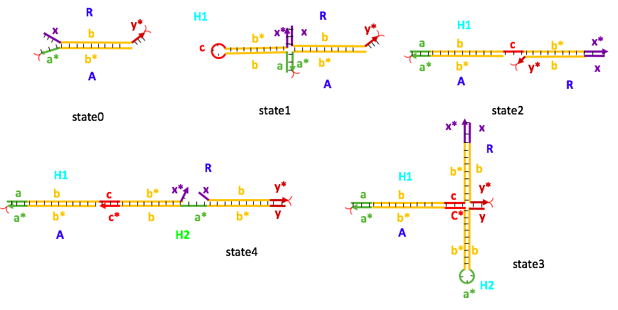
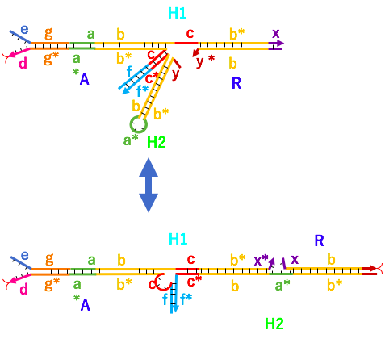

Design
To realize a gel that exhibits elasticity like a muscle in response to a DNA signal, the polymer constituting the gel is crosslinked with an actuator DNA that exhibits elasticity. Regarding elongation, a special HCR (fig. 1) in which H1 and H2 react while maintaining the crosslinking point has already been reported [1], and the gel can effectively swell by this reaction [2]. However, this reaction allows the gel to swell but not shrink. Therefore, we considered a special HCR called Reverse HRCR (Reverse HCR) that can cause stretching(fig.2) and regression(fig.3) as an actuator for a gel that exhibits elasticity.
Principle of HCR maintaining the cross-linking point

fig.1 [1] Principle of HCR maintaining the cross-linking point
DNA A and DNA R are the cross-linking points of the gel. In a special HCR that maintains the cross-linking point, hairpin DNA H1 binds to the sticky ends of A and R, and four-way branch migration occurs (state 1). As a result, R switches from A to H1 (state 2). H2 binds to the newly exposed sticky end of H1, and a four-way branch migration occurs (state 3). This replaces R from H1 to H2(state 4). By this cycle, the DNA complex extends in the R direction while maintaining the crosslinking point.
In the conventional HCR that maintains the cross-linking point, the gel can be effectively expanded by extending the cross-linking, but to realize a metamorphic robot, expansion and contraction of the gel, that is, expansion and contraction of the actuator is necessary. In RHCR, d, e, f, g, and h domains are required for regression in addition to the domains a, b, c, x, and y required for conventional HCR elongation.
RHCR elongation reaction

fig,2 RHCR elongation reaction
The elongation reaction of RHCR is basically the same as that of conventional HCR. The reaction diagram is shown in fig.2.
Hairpin DNA H1 binds to Sticky ends of A and R, and four-way branch migration occurs (Slide 3). This switches the R bond from A to H1 (slide 4). Next, H2 binds with the f domain of DNA A, the C domain of DNA H1 and the y domain of R as the toehold, and four-way branch migration occurs (Slide 7). This switches the R bond from H1 to H2 (slide 8).
Subsequently, H1 joins domain a and domain x * with domain a * of H2 and the domain x of R as the toehold, and four-way branch migration occurs again. This (slide 10) switches the R bond from H2 to H1. Four-way branch migration occurs when H2 binds with the exposed c domain of H1 and y * domain of R as toehold (slide 12). This switches the R bond from H1 to H2 (slide 13).
By this cycle, the film extends in the R direction while maintaining the crosslinking point.
RHCR regression reaction

fig.3 RHCR regression reaction
In the regression reaction of RHCR, the oligonucleotide sequence consists of DNA A, H1, H2, and R. DNA R acts as an anchor in this sequence. At the same time as the HCR in the extending direction is being advanced, the H1 eraser hairpin toehold (EH1) hybridizes with the e domain of H1 and the d domain of A (slide 4). Then, the H1 and A unwind to hybridize with EH1 (slide 6). The hybridization continues further by the opening ring of c in EH 1 to bind with c loop in A (slide 7).
The hybridization doesn’t stop until c, it continues further again until b in EH1 binds with b* in H1 (slide 8). This hybridization is expected to be in equilibrium between slide 7 and slide 8. However, the reaction tends to move to slide 8 as the EH1 releaser binds with the toehold in EH1 to finally release EH1-H1 duplex as shown in Slide 12.
The dangling end of A hybridizes with H1 because complementary part of g and g* respectively. This hybridization is followed by the rest of the sequence as shown in slide 16, slide 17, slide 18, and slide 19. Finally, H2 is released as the result of this chain hybridization. In the end, the sequence of oligonucleotide on slide 21 has a similar structure as slide 1. The difference is the sequence has been shortened with H1 and H2 being released from the sequence. Then, this reaction repeats until the last H2 in sequence. The chain reaction stops in the last H2 because the f* domain in the H2 is needed to release the other H2 as shown in slide 19.
If H1 and H2 are present in this state, the elongation reaction starts again on the R side, and RHCR shows a dynamic behavior that repeats expansion and contraction. If H1 and H2 do not exist, RHCR is maintained in a degenerated state. The final stage shown in figure 4 is much shorter than the original state of several H1 and H2 in series, so there is no doubt that RHCR has a regression function.

fig.4 Final state of regression reaction
[1] S. Venkataraman, R. M. Dirks, P. W. K. Rothemund, E. Winfree, N. A. Pierce, Nat. Nanotechnol (2007).
[2] A. Cangialosi, C. Yoon, J. Liu, Q. Huang, J. guo, T. D. Nguyen, D. H. Gracias, R. Schulman, Material science (2017)